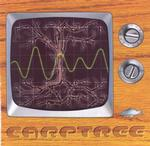

| Artist: | Carptree |
| Title: | Carptree |
| Label: | Fosfor Creation |
| Length(s): | 57 minutes |
| Year(s) of release: | 2001 |
| Month of review: | [07/2001] |
| 1) | Heart | 4.54 |
| 2) | Withour Curiosity | 3.42 |
| 3) | Ten Days Of Rain | 4.19 |
| 4) | Cuckoo | 1.50 |
| 5) | Give Myself Away | 3.50 |
| 6) | It Doesn't Know It | 5.16 |
| 7) | Fools | 3.08 |
| 8) | Coming Out At Night | 4.39 |
| 9) | Sad Little Song | 2.49 |
| 10) | Together Alive | 5.25 |
| 11) | Looking For Something | 5.01 |
| 12) | Nowhere To Grow | 5.39 |
| 13) | Tiny Salty Drops | 6.15 |
A very distinctive and intimate vocal part opens Without Curiosity. Bleepy keyboards, sparse instrumentation and such make this is a somewhat spacey moody pop song. It is hard to describe actually, there is so much to it. Then the music becomes a bit louder, but certainly not faster. All the layers in the music can be clearly distinguished. In terms of references I find that the music has some aspects of the progressive pop of Peter Gabriel, but there are also so many differences, that listing them would be a task.
Ten Days Of Rain is another strong attempt at catchy progressive pop: light piano, telling varied vocal melodies and a mood similar to Portishead, but catchier. The short track Cuckoo is rather weird with high pitched Hammill style vocals.
Give Myself Away is another pop song, maybe a bit lighter than the previous tracks, less "progressive" one might say. Some might find it a bit boring, but it is a good song. More up-beat is It Doesn't Know It with loose drumming and a forceful chorus. The verses are quite against the grain. These parts, alternating with some synth string passages make for a varied plodding track.
Moody stuff we find on the gurgly Fools with intimate vocals. Coming Out At Night opens a bit slowly and unadventurous. Still there are some nice moody keyboards on here and low dark soft industrial percussion lined with strings. Maybe a bit too mellow this one, but not without its beauty. The ending is better, sounding fuller.
Sad Little Song is magnificent in its modesty. Of course it must be set off against the percussively opening Together Alive that brims with energy. Mostly modern keyboards again, but the melodies and sounds are great. Quite a long track for the band.
Looking For Something is a bit of a slow track with cosmic keyboards. On the other hand, the song is rather simple, but the arrangements and the sounds make it more interesting. But is still quite simple. The band is quite unique (or maybe my memory isn't working today), but the music has both modern stylings, but also apsects of quality eighties pop like Icehouse and Mr. Mister. The song ends with samples.
Nowhere To Grow has a bit of Spocks Weirdness, but when the drums starts to pound and the guitar stars to ring out, you will be surprised to hear that the music continues with strumming acoustics. The ending is very chaotic and has echoes of King Crimson and a singer going mad.
The final track is Tiny Salty Drops. A lullabye with some dream house influences. A long lullabye, and not so lullabyish at the end. A good way to end the album.